This package contains basic mathematical operations, such as summation and multiplication, and basic mathematical functions, such as sqrt and sin, as input/output blocks. All blocks of this library can be either connected with continuous blocks or with sampled-data blocks.
| Name | Description |
|---|---|
| Conversion blocks to convert between SI and non-SI unit signals | |
| Change causality of input signals by defining that two input signals are identical (e.g. for inverse models) | |
| 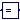 TwoOutputs | Change causality of output signals by defining that two output signals are identical (e.g. for inverse models) |
| Output the product of a gain value with the input signal | |
| MatrixGain | Output the product of a gain matrix with the input signal vector |
| Output the sum of the elements of the input vector | |
| Output difference between commanded and feedback input | |
| Output the sum of the two inputs | |
| Output the sum of the three inputs | |
| Output product of the two inputs | |
| Output first input divided by second input | |
| Output the absolute value of the input | |
| Output the sign of the input | |
| Output the square root of the input (input >= 0 required) | |
| Output the sine of the input | |
| Output the cosine of the input | |
| 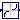 Tan | Output the tangent of the input |
| Output the arc sine of the input | |
| Output the arc cosine of the input | |
| Output the arc tangent of the input | |
| Output atan(u1/u2) of the inputs u1 and u2 | |
| Output the hyperbolic sine of the input | |
| Output the hyperbolic cosine of the input | |
| 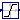 Tanh | Output the hyperbolic tangent of the input |
| Output the exponential (base e) of the input | |
| Output the natural (base e) logarithm of the input (input > 0 required) | |
| Output the base 10 logarithm of the input (input > 0 required) | |
| Convert Real to Integer signal | |
| Convert integer to real signals | |
| 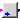 BooleanToReal | Convert Boolean to Real signal |
| BooleanToInteger | Convert Boolean to Integer signal |
| Convert Real to Boolean signal | |
| IntegerToBoolean | Convert Integer to Boolean signal |
| Max | Pass through the largest signal |
| Min | Pass through the smallest signal |
| Indicates rising edge of boolean signal | |
| Indicates boolean signal changing | |
| Indicates integer signal changing |
This block is used to enable asignment of values to variables preliminary defined as outputs (e.g. useful for inverse model generation).
| Type | Name | Description |
|---|---|---|
| input RealInput | u1 | Connector of first Real input signal |
| input RealInput | u2 | Connector of second Real input signal (u1=u2) |
block TwoInputs
"Change causality of input signals by defining that two input signals are identical (e.g. for inverse models)"
extends Blocks.Interfaces.BlockIcon;
Blocks.Interfaces.RealInput u1 "Connector of first Real input signal";
Blocks.Interfaces.RealInput u2
"Connector of second Real input signal (u1=u2)";
equation
u1 = u2;
end TwoInputs;
This block is used to enable calculation of values preliminary defined as inputs. (e.g. useful for inverse model generation).
| Type | Name | Description |
|---|---|---|
| output RealOutput | y1 | Connector of first Real output signal |
| output RealOutput | y2 | Connector of second Real output signal (y1=y2) |
block TwoOutputs
"Change causality of output signals by defining that two output signals are identical (e.g. for inverse models)"
extends Blocks.Interfaces.BlockIcon;
output Blocks.Interfaces.RealOutput y1
"Connector of first Real output signal";
output Blocks.Interfaces.RealOutput y2
"Connector of second Real output signal (y1=y2)";
equation
y1 = y2;
end TwoOutputs;
 Modelica.Blocks.Math.Gain
Modelica.Blocks.Math.Gain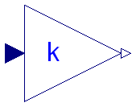
This block computes output y as product of gain k with the input u:
y = k * u;
| Type | Name | Default | Description |
|---|---|---|---|
| Real | k | 1 | Gain value multiplied with input signal |
| Type | Name | Description |
|---|---|---|
| input RealInput | u | Input signal connector |
| output RealOutput | y | Output signal connector |
block Gain "Output the product of a gain value with the input signal" parameter Real k=1 "Gain value multiplied with input signal"; public Interfaces.RealInput u "Input signal connector"; Interfaces.RealOutput y "Output signal connector"; equation y = k*u; end Gain;
 Modelica.Blocks.Math.MatrixGain
Modelica.Blocks.Math.MatrixGain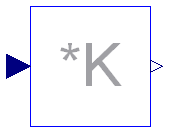
This blocks computes output vector y as product of the gain matrix K with the input signal vector u:
y = K * u;
Example:
parameter: K = [0.12 2; 3 1.5]
results in the following equations:
| y[1] | | 0.12 2.00 | | u[1] |
| | = | | * | |
| y[2] | | 3.00 1.50 | | u[2] |
| Type | Name | Default | Description |
|---|---|---|---|
| Real | K[:, :] | [1, 0; 0, 1] | Gain matrix which is multiplied with the input |
| Type | Name | Description |
|---|---|---|
| input RealInput | u[nin] | Connector of Real input signals |
| output RealOutput | y[nout] | Connector of Real output signals |
block MatrixGain
"Output the product of a gain matrix with the input signal vector"
parameter Real K[:, :]=[1, 0; 0, 1]
"Gain matrix which is multiplied with the input";
extends Interfaces.MIMO(final nin=size(K, 2), final nout=size(K, 1));
equation
y = K*u;
end MatrixGain;
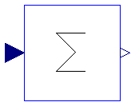
This blocks computes output y as sum of the elements of the input signal vector u:
y = u[1] + u[2] + ...;
Example:
parameter: nin = 3;
results in the following equations:
y = u[1] + u[2] + u[3];
| Type | Name | Default | Description |
|---|---|---|---|
| Integer | nin | 1 | Number of inputs |
| Real | k[nin] | ones(nin) | Optional: sum coefficients |
| Type | Name | Description |
|---|---|---|
| input RealInput | u[nin] | Connector of Real input signals |
| output RealOutput | y | Connector of Real output signal |
block Sum "Output the sum of the elements of the input vector" extends Interfaces.MISO; parameter Real k[nin]=ones(nin) "Optional: sum coefficients"; equation y = k*u; end Sum;
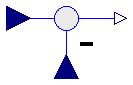
This blocks computes output y as difference of the commanded input u1 and the feedback input u2:
y = u1 - u2;
Example:
parameter: n = 2
results in the following equations:
y = u1 - u2
| Type | Name | Description |
|---|---|---|
| input RealInput | u1 | |
| input RealInput | u2 | |
| output RealOutput | y |
block Feedback "Output difference between commanded and feedback input" input Interfaces.RealInput u1; input Interfaces.RealInput u2; output Interfaces.RealOutput y; equation y = u1 - u2; end Feedback;
 Modelica.Blocks.Math.Add
Modelica.Blocks.Math.Add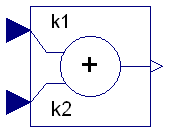
This blocks computes output y as sum of the two input signals u1 and u2:
y = k1*u1 + k2*u2;
Example:
parameter: k1= +2, k2= -3
results in the following equations:
y = 2 * u1 - 3 * u2
| Type | Name | Default | Description |
|---|---|---|---|
| Real | k1 | +1 | Gain of upper input |
| Real | k2 | +1 | Gain of lower input |
| Type | Name | Description |
|---|---|---|
| input RealInput | u1 | Connector of Real input signal 1 |
| input RealInput | u2 | Connector of Real input signal 2 |
| output RealOutput | y | Connector of Real output signal |
block Add "Output the sum of the two inputs" extends Interfaces.SI2SO; parameter Real k1=+1 "Gain of upper input"; parameter Real k2=+1 "Gain of lower input"; equation y = k1*u1 + k2*u2; end Add;
 Modelica.Blocks.Math.Add3
Modelica.Blocks.Math.Add3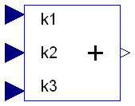
This blocks computes output y as sum of the three input signals u1, u2 and u3:
y = k1*u1 + k2*u2 + k3*u3;
Example:
parameter: k1= +2, k2= -3, k3=1;
results in the following equations:
y = 2 * u1 - 3 * u2 + u3;
| Type | Name | Default | Description |
|---|---|---|---|
| Real | k1 | +1 | Gain of upper input |
| Real | k2 | +1 | Gain of middle input |
| Real | k3 | +1 | Gain of lower input |
| Type | Name | Description |
|---|---|---|
| input RealInput | u1 | Connector 1 of Real input signals |
| input RealInput | u2 | Connector 2 of Real input signals |
| input RealInput | u3 | Connector 3 of Real input signals |
| output RealOutput | y | Connector of Real output signals |
block Add3 "Output the sum of the three inputs" extends Interfaces.BlockIcon; parameter Real k1=+1 "Gain of upper input"; parameter Real k2=+1 "Gain of middle input"; parameter Real k3=+1 "Gain of lower input"; input Interfaces.RealInput u1 "Connector 1 of Real input signals"; input Interfaces.RealInput u2 "Connector 2 of Real input signals"; input Interfaces.RealInput u3 "Connector 3 of Real input signals"; output Interfaces.RealOutput y "Connector of Real output signals"; equation y = k1*u1 + k2*u2 + k3*u3; end Add3;
 Modelica.Blocks.Math.Product
Modelica.Blocks.Math.Product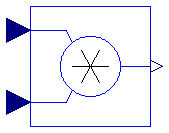
This blocks computes the output y (element-wise) as product of the corresponding elements of the two inputs u1 and u2:
y = u1 * u2;
| Type | Name | Description |
|---|---|---|
| input RealInput | u1 | Connector of Real input signal 1 |
| input RealInput | u2 | Connector of Real input signal 2 |
| output RealOutput | y | Connector of Real output signal |
block Product "Output product of the two inputs" extends Interfaces.SI2SO; equation y = u1*u2; end Product;
 Modelica.Blocks.Math.Division
Modelica.Blocks.Math.Division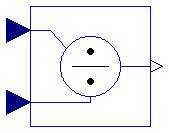
This block computes the output y (element-wise) by dividing the corresponding elements of the two inputs u1 and u2:
y = u1 / u2;
| Type | Name | Description |
|---|---|---|
| input RealInput | u1 | Connector of Real input signal 1 |
| input RealInput | u2 | Connector of Real input signal 2 |
| output RealOutput | y | Connector of Real output signal |
block Division "Output first input divided by second input" extends Interfaces.SI2SO; equation y = u1/u2; end Division;
 Modelica.Blocks.Math.Abs
Modelica.Blocks.Math.Abs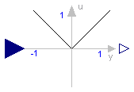
This blocks computes the output y as absolute value of the input u:
y = abs( u );
| Type | Name | Description |
|---|---|---|
| input RealInput | u | Connector of Real input signal |
| output RealOutput | y | Connector of Real output signal |
block Abs "Output the absolute value of the input" extends Interfaces.SISO; equation y = abs(u); end Abs;
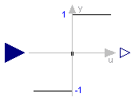
This blocks computes the output y as sign of the input u:
1 if u > 0
y = 0 if u == 0
-1 if u < 0
| Type | Name | Description |
|---|---|---|
| input RealInput | u | Connector of Real input signal |
| output RealOutput | y | Connector of Real output signal |
block Sign "Output the sign of the input" extends Interfaces.SISO; equation y = sign(u); end Sign;
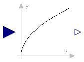
This blocks computes the output y as square root of the input u:
y = sqrt( u );
All elements of the input vector shall be zero or positive. Otherwise an error occurs.
| Type | Name | Description |
|---|---|---|
| input RealInput | u | Connector of Real input signal |
| output RealOutput | y | Connector of Real output signal |
block Sqrt "Output the square root of the input (input >= 0 required)" extends Interfaces.SISO; equation y = sqrt(u); end Sqrt;
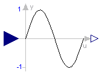
This blocks computes the output y as sine of the input u:
y = sin( u );

| Type | Name | Description |
|---|---|---|
| input RealInput | u | Connector of Real input signal |
| output RealOutput | y | Connector of Real output signal |
block Sin "Output the sine of the input" extends Interfaces.SISO; equation y = Modelica.Math.sin(u); end Sin;
 Modelica.Blocks.Math.Cos
Modelica.Blocks.Math.Cos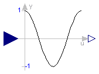
This blocks computes the output y as cos of the input u:
y = cos( u );

| Type | Name | Description |
|---|---|---|
| input RealInput | u | Connector of Real input signal |
| output RealOutput | y | Connector of Real output signal |
block Cos "Output the cosine of the input" extends Interfaces.SISO; equation y = Modelica.Math.cos(u); end Cos;
 Modelica.Blocks.Math.Tan
Modelica.Blocks.Math.Tan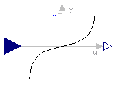
This blocks computes the output y as tan of the input u:
y = tan( u );

| Type | Name | Description |
|---|---|---|
| input RealInput | u | Connector of Real input signal |
| output RealOutput | y | Connector of Real output signal |
block Tan "Output the tangent of the input" extends Interfaces.SISO; equation y = Modelica.Math.tan(u); end Tan;
 Modelica.Blocks.Math.Asin
Modelica.Blocks.Math.Asin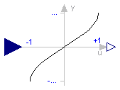
This blocks computes the output y as the sine-inverse of the input u:
y = asin( u );
The absolute values of the elements of the input u need to be less or equal to one (abs( u ) <= 1). Otherwise an error occurs.

| Type | Name | Description |
|---|---|---|
| input RealInput | u | Connector of Real input signal |
| output RealOutput | y | Connector of Real output signal |
block Asin "Output the arc sine of the input" extends Interfaces.SISO; equation y = Modelica.Math.asin(u); end Asin;
 Modelica.Blocks.Math.Acos
Modelica.Blocks.Math.Acos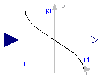
This blocks computes the output y as the cosine-inverse of the input u:
y = acos( u );
The absolute values of the elements of the input u need to be less or equal to one (abs( u ) <= 1). Otherwise an error occurs.

| Type | Name | Description |
|---|---|---|
| input RealInput | u | Connector of Real input signal |
| output RealOutput | y | Connector of Real output signal |
block Acos "Output the arc cosine of the input" extends Interfaces.SISO; equation y = Modelica.Math.acos(u); end Acos;
 Modelica.Blocks.Math.Atan
Modelica.Blocks.Math.Atan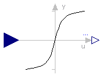
This blocks computes the output y as the tangent-inverse of the input u:
y= atan( u );

| Type | Name | Description |
|---|---|---|
| input RealInput | u | Connector of Real input signal |
| output RealOutput | y | Connector of Real output signal |
block Atan "Output the arc tangent of the input" extends Interfaces.SISO; equation y = Modelica.Math.atan(u); end Atan;
 Modelica.Blocks.Math.Atan2
Modelica.Blocks.Math.Atan2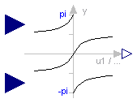
This blocks computes the output y as the tangent-inverse of the input u1 divided by input u2:
y = atan2( u1, u2 );
u1 and u2 shall not be zero at the same time instant. Atan2 uses the sign of u1 and u2 in order to construct the solution in the range -180 deg ≤ y ≤ 180 deg, whereas block Atan gives a solution in the range -90 deg ≤ y ≤ 90 deg.

| Type | Name | Description |
|---|---|---|
| input RealInput | u1 | Connector of Real input signal 1 |
| input RealInput | u2 | Connector of Real input signal 2 |
| output RealOutput | y | Connector of Real output signal |
block Atan2 "Output atan(u1/u2) of the inputs u1 and u2" extends Interfaces.SI2SO; equation y = Modelica.Math.atan2(u1, u2); end Atan2;
 Modelica.Blocks.Math.Sinh
Modelica.Blocks.Math.Sinh

This blocks computes the output y as the hyperbolic sine of the input u:
y = sinh( u );

| Type | Name | Description |
|---|---|---|
| input RealInput | u | Connector of Real input signal |
| output RealOutput | y | Connector of Real output signal |
block Sinh "Output the hyperbolic sine of the input" extends Interfaces.SISO; equation y = Modelica.Math.sinh(u); end Sinh;
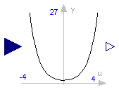
This blocks computes the output y as the hyperbolic cosine of the input u:
y = cosh( u );

| Type | Name | Description |
|---|---|---|
| input RealInput | u | Connector of Real input signal |
| output RealOutput | y | Connector of Real output signal |
block Cosh "Output the hyperbolic cosine of the input" extends Interfaces.SISO; equation y = Modelica.Math.cosh(u); end Cosh;
 Modelica.Blocks.Math.Tanh
Modelica.Blocks.Math.Tanh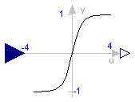
This blocks computes the output y as the hyperbolic tangent of the input u:
y = tanh( u );

| Type | Name | Description |
|---|---|---|
| input RealInput | u | Connector of Real input signal |
| output RealOutput | y | Connector of Real output signal |
block Tanh "Output the hyperbolic tangent of the input" extends Interfaces.SISO; equation y = Modelica.Math.tanh(u); end Tanh;
 Modelica.Blocks.Math.Exp
Modelica.Blocks.Math.Exp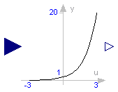
This blocks computes the output y as the exponential (of base e) of the input u:
y = exp( u );
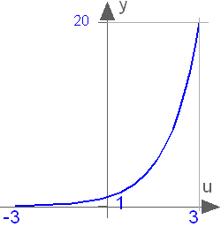
| Type | Name | Description |
|---|---|---|
| input RealInput | u | Connector of Real input signal |
| output RealOutput | y | Connector of Real output signal |
block Exp "Output the exponential (base e) of the input" extends Interfaces.SISO; equation y = Modelica.Math.exp(u); end Exp;
 Modelica.Blocks.Math.Log
Modelica.Blocks.Math.Log
This blocks computes the output y as the natural (base e) logarithm of the input u:
y = log( u );
An error occurs if the elements of the input u are zero or negative.

| Type | Name | Description |
|---|---|---|
| input RealInput | u | Connector of Real input signal |
| output RealOutput | y | Connector of Real output signal |
block Log "Output the natural (base e) logarithm of the input (input > 0 required)" extends Interfaces.SISO; equation y = Modelica.Math.log(u); end Log;
 Modelica.Blocks.Math.Log10
Modelica.Blocks.Math.Log10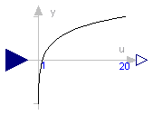
This blocks computes the output y as the base 10 logarithm of the input u:
y = log10( u );
An error occurs if the elements of the input u are zero or negative.

| Type | Name | Description |
|---|---|---|
| input RealInput | u | Connector of Real input signal |
| output RealOutput | y | Connector of Real output signal |
block Log10 "Output the base 10 logarithm of the input (input > 0 required)" extends Interfaces.SISO; equation y = Modelica.Math.log10(u); end Log10;
 Modelica.Blocks.Math.RealToInteger
Modelica.Blocks.Math.RealToInteger
This block computes the output y as nearest integer value of the input u:
y = integer( floor( u + 0.5 ) ) for u > 0;
y = integer( ceil ( u - 0.5 ) ) for u < 0;
| Type | Name | Description |
|---|---|---|
| input RealInput | u | Connector of Real input signal |
| output IntegerOutput | y | Connector of Integer output signal |
block RealToInteger "Convert Real to Integer signal"
extends Interfaces.IntegerBlockIcon;
public
Interfaces.RealInput u "Connector of Real input signal";
Interfaces.IntegerOutput y "Connector of Integer output signal";
equation
y = if (u > 0) then integer(floor(u + 0.5)) else
integer(ceil( u - 0.5));
end RealToInteger;
 Modelica.Blocks.Math.IntegerToReal
Modelica.Blocks.Math.IntegerToReal
This block computes the output y as Real equivalent of the Integer input u:
y = u;
where u is of Integer and y of Real type.
| Type | Name | Description |
|---|---|---|
| input IntegerInput | u | Connector of Integer input signal |
| output RealOutput | y | Connector of Real output signal |
block IntegerToReal "Convert integer to real signals" extends Interfaces.BlockIcon; Interfaces.IntegerInput u "Connector of Integer input signal"; Interfaces.RealOutput y "Connector of Real output signal"; equation y = u; end IntegerToReal;
This block computes the output y as Real equivalent of the Boolean input u:
y = if u then realTrue else realFalse;
where u is of Boolean and y of Real type, and realTrue and realFalse are parameters.
| Type | Name | Default | Description |
|---|---|---|---|
| Real | realTrue | 1.0 | Output signal for true Boolean input |
| Real | realFalse | 0.0 | Output signal for false Boolean input |
| Type | Name | Description |
|---|---|---|
| input BooleanInput | u | Connector of Boolean input signal |
| output RealOutput | y | Connector of Real output signal |
block BooleanToReal "Convert Boolean to Real signal" extends Interfaces.partialBooleanSI; parameter Real realTrue=1.0 "Output signal for true Boolean input"; parameter Real realFalse=0.0 "Output signal for false Boolean input"; Blocks.Interfaces.RealOutput y "Connector of Real output signal"; equation y = if u then realTrue else realFalse; end BooleanToReal;

This block computes the output y as Integer equivalent of the Boolean input u:
y = if u then integerTrue else integerFalse;
where u is of Boolean and y of Integer type, and integerTrue and integerFalse are parameters.
| Type | Name | Default | Description |
|---|---|---|---|
| Integer | integerTrue | 1 | Output signal for true Boolean input |
| Integer | integerFalse | 0 | Output signal for false Boolean input |
| Type | Name | Description |
|---|---|---|
| input BooleanInput | u | Connector of Boolean input signal |
| output IntegerOutput | y | Connector of Integer output signal |
block BooleanToInteger "Convert Boolean to Integer signal" extends Interfaces.partialBooleanSI; parameter Integer integerTrue=1 "Output signal for true Boolean input"; parameter Integer integerFalse=0 "Output signal for false Boolean input"; Blocks.Interfaces.IntegerOutput y "Connector of Integer output signal"; equation y = if u then integerTrue else integerFalse; end BooleanToInteger;

This block computes the Boolean output y from the Real input u by the equation:
y = u ≥ threshold;
where threshold is a parameter.
| Type | Name | Default | Description |
|---|---|---|---|
| Real | threshold | 0.5 | Output signal y is true, if input u >= threshold |
| Type | Name | Description |
|---|---|---|
| input RealInput | u | Connector of Real input signal |
| output BooleanOutput | y | Connector of Boolean output signal |
block RealToBoolean "Convert Real to Boolean signal"
Blocks.Interfaces.RealInput u "Connector of Real input signal";
extends Interfaces.partialBooleanSO;
parameter Real threshold=0.5
"Output signal y is true, if input u >= threshold";
equation
y = u >= threshold;
end RealToBoolean;

This block computes the Boolean output y from the Integer input u by the equation:
y = u ≥ threshold;
where threshold is a parameter.
| Type | Name | Default | Description |
|---|---|---|---|
| Integer | threshold | 1 | Output signal y is true, if input u >= threshold |
| Type | Name | Description |
|---|---|---|
| input IntegerInput | u | Connector of Integer input signal |
| output BooleanOutput | y | Connector of Boolean output signal |
block IntegerToBoolean "Convert Integer to Boolean signal"
Blocks.Interfaces.IntegerInput u "Connector of Integer input signal";
extends Interfaces.partialBooleanSO;
parameter Integer threshold=1
"Output signal y is true, if input u >= threshold";
equation
y = u >= threshold;
end IntegerToBoolean;
 Modelica.Blocks.Math.Max
Modelica.Blocks.Math.Max

This block computes the output y as maximum of the two Real inputs u1 and u2:
y = max ( u1 , u2 );
| Type | Name | Description |
|---|---|---|
| input RealInput | u1 | Connector of Real input signal 1 |
| input RealInput | u2 | Connector of Real input signal 2 |
| output RealOutput | y | Connector of Real output signal |
block Max "Pass through the largest signal" extends Interfaces.SI2SO; equation y = max(u1, u2); end Max;
This block computes the output y as minimum of the two Real inputs u1 and u2:
y = min ( u1 , u2 );
| Type | Name | Description |
|---|---|---|
| input RealInput | u1 | Connector of Real input signal 1 |
| input RealInput | u2 | Connector of Real input signal 2 |
| output RealOutput | y | Connector of Real output signal |
block Min "Pass through the smallest signal" extends Interfaces.SI2SO; equation y = min(u1, u2); end Min;

This block sets the Boolean output y to true, when the Boolean input u shows a rising edge:
y = edge( u );
| Type | Name | Description |
|---|---|---|
| input BooleanInput | u | Connector of Boolean input signal |
| output BooleanOutput | y | Connector of Boolean output signal |
block Edge "Indicates rising edge of boolean signal" extends Interfaces.BooleanSISO; equation y = edge(u); end Edge;
 Modelica.Blocks.Math.BooleanChange
Modelica.Blocks.Math.BooleanChange
This block sets the Boolean output y to true, when the Boolean input u shows a rising or falling edge, i.e., when the signal changes:
y = change( u );
| Type | Name | Description |
|---|---|---|
| input BooleanInput | u | Connector of Boolean input signal |
| output BooleanOutput | y | Connector of Boolean output signal |
block BooleanChange "Indicates boolean signal changing" extends Interfaces.BooleanSISO; equation y = change(u); end BooleanChange;
 Modelica.Blocks.Math.IntegerChange
Modelica.Blocks.Math.IntegerChange

This block sets the Boolean output y to true, when the Integer input u changes:
y = change( u );
| Type | Name | Description |
|---|---|---|
| input IntegerInput | u | Connector of Integer input signal |
| output BooleanOutput | y | Connector of Boolean output signal |
block IntegerChange "Indicates integer signal changing" extends Interfaces.IntegerSIBooleanSO; equation y = change(u); end IntegerChange;